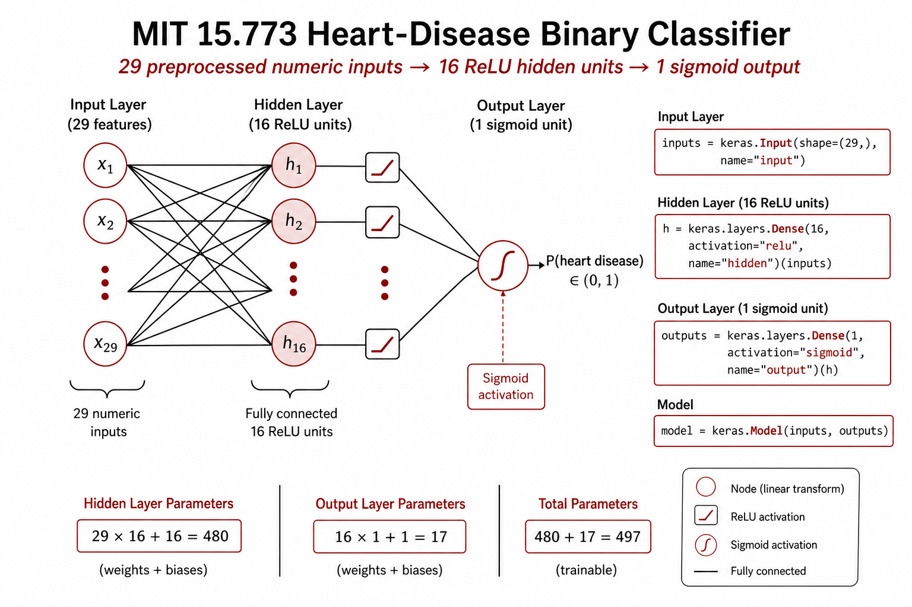
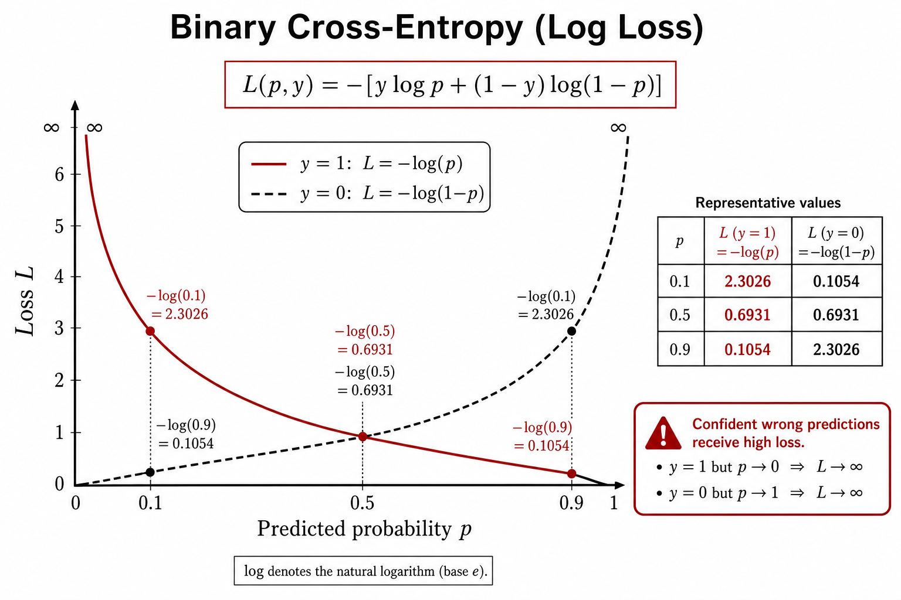
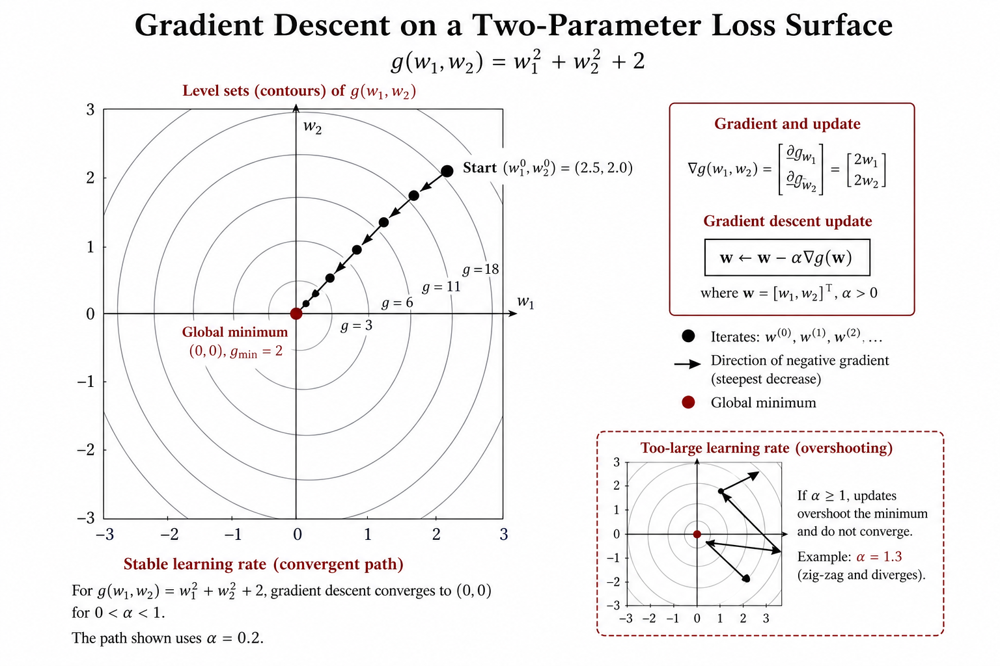
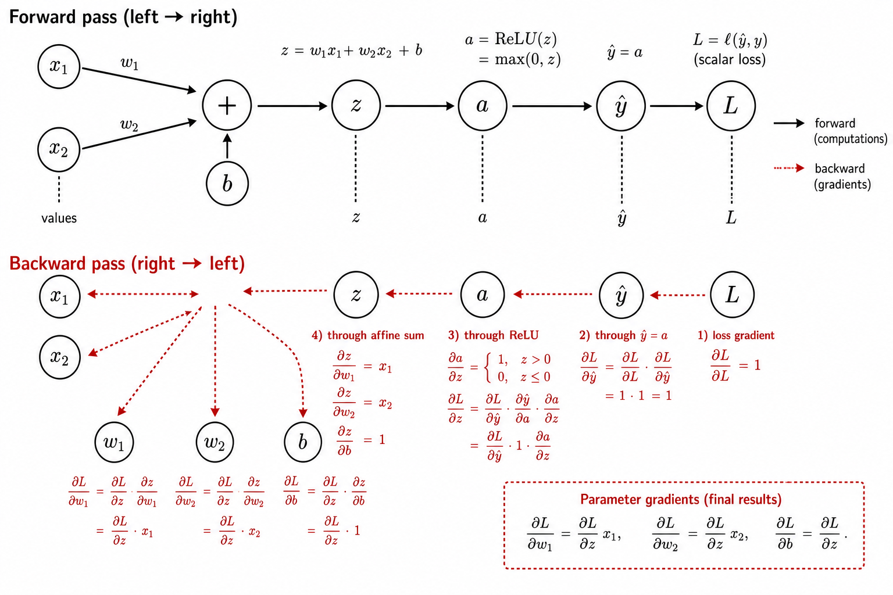
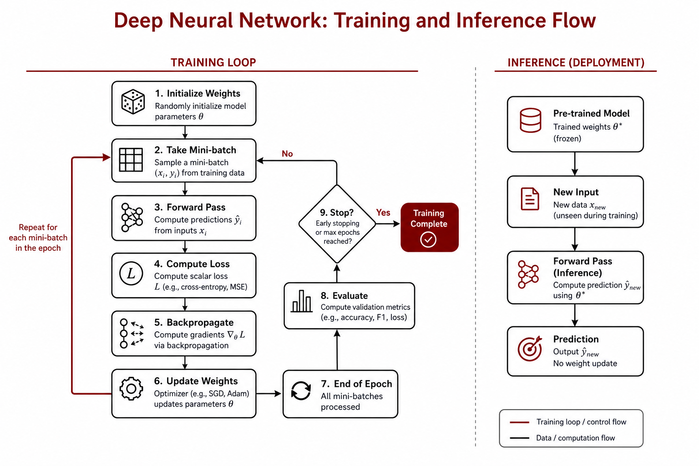

Chapter 2: Training Deep Neural Networks
Lecture video: https://www.youtube.com/watch?v=3Lr8nVUDCpk Slides (PDF): Lecture 2 — Training Deep Neural Networks · Lecture 2 — Worked Backprop Example
In Chapter 1 we learned how to design a neural network: the input and output layers are dictated by your problem, and everything in between — the number of hidden layers, the number of neurons in each, the activation functions — is in your hands. But a freshly designed network is full of question marks: hundreds of parameters (or, for GPT-class models, hundreds of billions) whose values we do not yet know. This chapter is about how those question marks become numbers. As Ramakrishnan says at the top of the lecture, "Today, we're going to talk about how do you actually train a neural network, because that is the heart of the game here."
The chapter follows the lecture's arc. We start with a concrete case study — predicting heart disease from patient data — and design a network for it. We take a first look at how that design translates into four lines of Keras code. Then we build the conceptual machinery of training: loss functions (including a from-scratch derivation of binary cross-entropy), gradient descent (an algorithm from 1847 that powers GPT-4), backpropagation (with a fully worked example, reconstructed from the course's companion handout), and finally stochastic gradient descent, the workhorse of all modern deep learning.
One meta-rule from the lecture is worth stating before anything else, because it governs every design decision to come: start with the simplest network you can think of, and if it gets the job done, stop working on it. If it's not good enough, make it slightly more complicated.
Learning objectives
After working through this chapter, you should be able to:
- Design a small feedforward network for a real tabular classification problem, justify each design choice, and count its parameters.
- Read and write the four lines of Keras functional-API code that define a simple network, and explain what each line does.
- Define a loss function, explain why "discrepancy" is a deliberately broader word than "error," and match loss functions to output types (MSE for numeric outputs, binary cross-entropy for probabilities).
- Derive the binary cross-entropy loss from first principles, starting from the shapes we want the loss curve to have for $y=1$ and $y=0$ data points.
- State the gradient descent update rule $w \leftarrow w - \alpha \nabla g(w)$, explain the role of the learning rate, and extend the rule from one variable to billions via partial derivatives and the gradient vector.
- Explain why local minima and saddle points do not derail deep learning in practice.
- Compute the gradient of a small model's loss both "the old-fashioned way" and via backpropagation on a computational graph, and articulate where backprop's efficiency (and its synergy with GPUs) comes from.
- Explain what stochastic (minibatch) gradient descent changes relative to full-batch gradient descent, why it works, and why its "approximation error" can actually help.
2.1 The Case Study: Predicting Heart Disease
Rather than discuss training in the abstract, the lecture anchors everything in a real problem with real data. The Cleveland Clinic heart disease dataset contains records of patients who came to the clinic not for a heart problem — perhaps just for a physical — and for whom a battery of measurements was taken: demographics (age, gender), symptoms (chest pain), and biomarkers (blood pressure, cholesterol, blood sugar, and so on). The clinic then tracked these patients and recorded whether they were diagnosed with heart disease within the following year. The modeling opportunity: when a new patient walks in for something unrelated, predict whether something is going to happen to them in the next year. As Ramakrishnan puts it, "It's a nice classic machine learning setup."
You could absolutely attack this with random forests or gradient boosting — this is structured data, "data sitting in the columns of a spreadsheet," which is exactly where those methods shine. But the course strategy is to warm up our neural network knowledge on structured data before moving on to unstructured data — images the following week, then text — so we will solve it with a neural network.
A student asks the natural question (video ~4:00): when do you use a neural network versus a simpler model like logistic regression? Ramakrishnan offers two dimensions to think along. First, explainability: how important is it to explain or interpret the model for a non-technical consumer? "If they can't understand it, they won't use it" — and simpler models (logistic regression, decision trees, to some extent random forests) are more amenable to explanation, although the growing research field of mechanistic interpretability is working to open up the big black boxes. Second, sheer predictive accuracy: in some situations accuracy trumps everything else, in which case you just go with whatever predicts best.
Designing the network

Recall the checklist from Chapter 1: the input and output are handed to you by the problem; everything in the middle is yours. Here is how the lecture's design plays out:
- Input layer. The dataset has 13 input variables, but several are categorical (e.g., cholesterol coded as low/medium/high), so each categorical variable is one-hot encoded — a variable with five levels becomes five 0/1 columns. After encoding, the 13 variables become 29 inputs, $x_1, \dots, x_{29}$.
- Hidden layers. The simplest possible choice would be zero hidden layers — but a network with no hidden layers and a sigmoid output is just logistic regression. Since the point is to build a neural network, the design uses one hidden layer of 16 ReLU neurons. Why 16? Honest trial and error: Ramakrishnan tried 4, 8, and 16 (powers of 2, by convention), and 16 did well — while going above 16 made the model start to do worse, because of something called overfitting, which we take up properly in Chapter 3. And why ReLU? As in Chapter 1: a mountain of empirical evidence says ReLU is a really good default for hidden layers (plus some theoretical reasons we will glimpse when we discuss gradients later in this chapter).
- Output layer. The output is categorical and binary (heart disease: 1 or 0) — a classification problem — so we want the network to emit a probability, which means a single output unit with a sigmoid activation.
Every input is connected to every hidden unit, and every hidden unit to the output: the fully connected (dense) default for structured data. (We will see deviations from this default when we get to image and language processing.)
Counting the parameters
As urged in Chapter 1, get in the habit of quickly counting parameters every time you meet a network (video 10:01). Between the input and hidden layers there are $29 \times 16$ weights — one per arrow — plus one bias for each of the 16 hidden neurons. Between the hidden and output layers there are $16 \times 1$ weights plus one output bias:
$$29 \times 16 + 16 + 16 \times 1 + 1 = 497 \text{ parameters.}$$
Notice something important: going from a layer of size $A$ to a layer of size $B$ costs on the order of $A \times B$ parameters, because each layer is fully connected to the next. That is a dramatic explosion in the number of parameters — it is both where neural networks get their capacity and something to watch out for to prevent overfitting.
💬 From the lecture: "When you go from one layer to another layer, the number of weights is roughly on the order of A times B. And that's a dramatic explosion in the number of parameters. That's something we have to watch for later on to prevent overfitting."
2.2 A First Taste of Keras: Four Lines of Code
Before diving into the theory of training, the lecture "translates" this network into Keras code, just to demonstrate how easy it is (video ~12:00). A fuller introduction to Keras and TensorFlow — and the actual training of this model in Colab — comes in Chapter 3; for now, suspend disbelief and watch the picture become code. The convention is to define the layers from left to right, one after another:
input = keras.Input(shape=29)
h = keras.layers.Dense(16, activation="relu")(input)
output = keras.layers.Dense(1, activation="sigmoid")(h)
model = keras.Model(input, output)
Line by line:
keras.Input(shape=29)creates the input layer. We specify a shape rather than a length because inputs will not always be flat vectors — later in the course we will send Keras matrices, 3D cubes, and higher-dimensional tensors. Here the input happens to be a plain vector of 29 numbers. The result is given the nameinput.keras.layers.Dense(16, activation="relu")defines the hidden layer. "Dense" means fully connected to the prior and later layers;16is the number of neurons;"relu"is the activation. (A student asks whether we need to specify where the ReLU's bend is — no: the bend is always at 0.) But defining the layer is not enough: as far as this layer is concerned, the input layer doesn't exist yet. Appending(input)feeds the input layer's output into it — "the moment you do that, boom, it's going to receive the input from the previous layer" — and we name the resulth(for hidden; you can call it anything).- The output layer is just another
Denselayer, with one unit (we need to emit exactly one probability) and a sigmoid activation, fed byh. - Finally,
keras.Model(input, output)formally defines a model object — the thing Keras can train, evaluate, and use for prediction — by pointing at the input and the output.
That's it: a neural model for heart disease prediction in four lines. The Q&A around this demo (video ~17:00) is worth mining. Yes, you can define custom activation functions. For multi-class classification into, say, 10 classes, you would use 10 output units with a softmax activation (covered in the next lecture). And if your network needs 100 layers, you write a little loop rather than 100 lines: Keras only needs to know the input and the output, and it traces whatever transformations connect them — "a beautiful example of the power of abstraction."
💬 From the lecture: "These innocent four lines hide the potential that's possible here — but I guarantee you, in two to three weeks, you folks will be thinking in building blocks like LEGOs."
2.3 What "Training" Means
You have trained models before, even if nobody used the word. In linear regression you have a model with unknown coefficients; you add data; you run it through lm (in R) or scikit-learn or statsmodels; and out come actual numbers for the coefficients — 2.8, 2.9, and so on. Likewise for logistic regression with glm. The role of the data is to give you the coefficients — indeed, you can think of the fitted coefficients as a compressed version of the data.
Training simply means finding values for the weights and coefficients so that the model's predictions come as close to the actual values as possible. Under the hood, lm and glm run optimization algorithms to find those "best" values — you just never had to look, because it was all done for you. Training a deep neural network — even GPT-4 — is exactly the same process: the network "just happens to be a very complex function with lots of parameters." You fix the architecture first (a student asks about this — yes, the architecture must be defined before training, or Keras cannot even compute an output from an input), you add data, you optimize, and the question marks become numbers. For neural networks, though, we don't get to leave the optimization under the hood: we need to understand how it is done, because it matters.
To make "as close as possible" precise, we set up a function that measures the discrepancy between the actual and predicted values, and we find the parameter values that minimize it. In the deep learning world these functions are called loss functions. Ramakrishnan is deliberate about the word discrepancy rather than error: "error" tempts you to think only of predicted-minus-actual, which is too limiting. There is incredible creativity in the field around defining measures of discrepancy — many deep learning breakthroughs began as a cleverly designed loss function, and every paper you read seems to introduce a new one.
2.4 Loss Functions
A loss function is a function that quantifies the error in a model's predictions:
- If the predictions are close to the actual values, the loss is small.
- A perfect model has a loss of exactly zero.
A student in lecture summarizes it well — "loss is my way of finding out how good my model is" — and Ramakrishnan sharpens it: "Or rather, how bad your model is. And you want to minimize badness. That's the whole point of optimization."
You have already met a loss function: in linear regression, the sum of squared errors is the loss function — we just never called it that, because we weren't doing deep learning. The key design principle is that the loss function must be well matched to the kind of output that comes out of the model.
Mean squared error for numeric outputs
If the output is a general number — say a predicted product demand of 23 against an actual demand of 21 — plain differences make sense as discrepancies. For each data point $i$ (written as a superscript, indexing data points) we take the difference between the actual value $y^{(i)}$ and the predicted value $\hat{y}^{(i)}$, square it, and average over all $n$ points:
$$\text{MSE} = \frac{1}{n}\sum_{i=1}^{n}\left(y^{(i)} - \hat{y}^{(i)}\right)^2$$
This is the Mean Squared Error (MSE) loss, commonly used for general numeric outputs. It is the easiest loss function there is.
Deriving a loss for probabilities: binary cross-entropy

Now, as Ramakrishnan says, "let's crank it up a notch." In the heart disease model, the prediction is a probability — a fraction between 0 and 1, coming out of the sigmoid — while the actual output is exactly 0 or 1. How do you measure the discrepancy between a fraction and a binary label? What is a good loss function in this situation? Rather than just state the answer, the lecture builds it from intuition, sketched live on an iPad (video 25:06).
Case 1: the patient has heart disease ($y = 1$). Plot predicted probability on the horizontal axis (from 0 to 1) and loss on the vertical axis. If the model predicts a probability close to 1, it is doing well — the loss should be close to 0. If it predicts a probability close to 0, it is "screwing up badly" — the loss should be really high. So we want a curve that starts high at probability 0 and sweeps down to zero at probability 1.
Could that curve be a straight line? A student asks exactly this. It certainly could — but ideally, the more the model makes a mistake, the more harshly we want to penalize it. If the model says "one in a million" for a patient who actually has heart disease, we want the loss to be enormous — "a huge rap on the knuckles for the model: don't do that!" A steep, curved loss captures that dynamic (and, as a bonus, behaves better for gradient descent than a linear one — a technical point we can defer).
There is a very simple function with exactly this shape: the negative logarithm. For data points with $y = 1$,
$$\text{loss} = -\log\big(\text{predicted probability}\big)$$
Check it numerically:
| Predicted probability | $-\log_2(\text{predicted probability})$ |
|---|---|
| $1/1000$ | $9.97$ |
| $1/10$ | $3.32$ |
| $1/2$ | $1.0$ |
| $1$ | $0.0$ |
A confident wrong answer (probability $1/1000$ when the truth is 1) is punished roughly ten times as hard as a wishy-washy one ($1/2$), and a perfect prediction costs nothing.
Case 2: the patient does not have heart disease ($y = 0$). Same setup, flipped: a predicted probability near 0 should have near-zero loss, and the loss should climb higher and higher as the prediction approaches 1. The same trick works, applied to $1$ minus the probability. For data points with $y = 0$,
$$\text{loss} = -\log\big(1 - \text{predicted probability}\big)$$
| Predicted probability | $-\log_2(1 - \text{predicted probability})$ |
|---|---|
| $1/1000$ | $0.001$ |
| $1/10$ | $0.15$ |
| $1/2$ | $1.0$ |
| $0.999999$ | $19.93$ |
💬 From the lecture: "Mathematicians, once again, saved by the logarithm."
Combining the cases. We now have an if-then: use $-\log(p)$ when $y=1$ and $-\log(1-p)$ when $y=0$. If-thens are mathematically irksome — "you can't do derivatives and so on very easily." But there is a standard bag-of-math-tricks move for merging the two branches into a single expression. Writing $model(x^{(i)})$ for the predicted probability of the $i$-th data point:
$$\text{loss}_i = -\,y^{(i)} \log\big(model(x^{(i)})\big) \;-\; \big(1 - y^{(i)}\big)\log\big(1 - model(x^{(i)})\big)$$
Convince yourself this works. If $y^{(i)} = 1$, the factor $(1 - y^{(i)})$ is zero, so the second term collapses and we are left with $-\log(model(x^{(i)}))$ — exactly Case 1. If $y^{(i)} = 0$, the first term vanishes and the second becomes $-\log(1 - model(x^{(i)}))$ — exactly Case 2. "Simple and neat, right? In one expression, we have defined the perfect loss. No if-thens."
Finally, that was the loss for a single data point. We have lots of data points, so we add them all up and take the average:
$$\mathcal{L} = \frac{1}{n}\sum_{i=1}^{n}\Big[-\,y^{(i)} \log\big(model(x^{(i)})\big) - \big(1 - y^{(i)}\big)\log\big(1 - model(x^{(i)})\big)\Big]$$
This is the binary cross-entropy loss function. When you read about some massive deep neural network built by Google for a binary classification problem, chances are it was trained by minimizing exactly this.
Two good student questions round out the discussion. Can you edit the loss to penalize false negatives more strongly than false positives? Absolutely — the version here is the basic symmetric case, but asymmetric losses exist; if you are curious, look up the pinball loss. Why the log rather than some other curve — say, flatter for small mistakes and steeper later? You can totally do that. The log is not the only game in town; it is chosen because it is easy to work with, has good gradients, is mathematically well behaved — and happens to be empirically very effective.
2.5 Minimizing Functions: Gradient Descent
The name of the game is now to minimize the loss function. But loss functions are just a particular kind of function, so the lecture first considers the general problem of minimizing an arbitrary function, builds intuition there, and only then returns to loss functions.
Warming up with one variable
Take a little single-variable function $g(w)$ — the lecture uses a quartic (fourth-power) polynomial whose graph dips to a minimum somewhere around $w \approx -1.5$ (video ~36:00). It is a toy, but as Ramakrishnan warns, "the intuition we use here is going to be exactly what we use for GPT-4, so pay attention."
How do we minimize it? A student offers the calculus-class answer: take the derivative and set it equal to zero. Half right. Taking the derivative is exactly the right idea — but setting it to zero and solving becomes hopeless for very complicated functions; it is not at all clear what values make the derivative zero. So instead of solving, we will use the derivative as a local guide.
What does the derivative tell you? It is the rate of change: the derivative (slope) of $g$ at a point $w$ tells you how $g(w)$ changes for a small increase in $w$. That gives three cases:
| If the derivative at $w$ is… | What it means | Since we want to minimize, do this |
|---|---|---|
| Positive | Increasing $w$ slightly will increase $g(w)$ | Reduce $w$ slightly |
| Negative | Increasing $w$ slightly will decrease $g(w)$ | Increase $w$ slightly |
| $\approx 0$ | Changing $w$ slightly won't change $g(w)$ | Stop |
This immediately suggests an algorithm:
- Start at some point $w$.
- Calculate the derivative (slope) of $g$ at $w$, and nudge $w$ against it per the table.
- If you have hit the maximum number of iterations or run out of time (or the derivative is $\approx 0$), stop. Otherwise, go back to step 2.
This is gradient descent. The whole "very PowerPointy MBA table," as Ramakrishnan calls it, collapses into one compact update:
$$w \;\leftarrow\; w - \alpha \,\frac{dg(w)}{dw}$$
Check for yourself that this one line captures all three rows of the table: a positive derivative gets subtracted (reducing $w$), a negative derivative gets subtracted (increasing $w$), and a near-zero derivative leaves $w$ essentially unchanged.
💬 From the lecture: "This is the basic intuition behind how GPT-4 was built, which is kind of shocking if you think about it. All the heavy-duty optimization stuff that people have figured out over the decades is kind of not used. This algorithm is what's being used, with some flavors on top of it."
And the history is delicious: gradient descent was invented in 1847 by Augustin-Louis Cauchy. GPT-4 was built with an algorithm from 1847 — "which I find astonishing, frankly."
The learning rate
The little number $\alpha$ is called the learning rate, and it is our way of ensuring we increase or decrease $w$ only slightly. Why slightly? Because the derivative is a local statement — it is only valid for small movements around your current point. "If you take a big step, all bets are off." Typical values are small: 0.1, 0.01, 0.001, and so on, determined largely by trial and error. Ramakrishnan notes that when researchers publish a paper on training a big model, practitioners flip straight to the appendix to find the learning rates used — the learning-rate recipe is "part of the IP for how it's built." Intuitively (video ~52:00): if you are confident the function keeps sloping down in your direction for a while, you can afford a big step; if the terrain might curve away underneath you, take small steps so you don't have to backtrack.
Applied to the quartic warm-up, starting at $w = 2.5$ with $\alpha = 1$, the algorithm marches downhill — boom, boom, boom — and finds the minimum in four or five iterations (video ~42:00).
From one variable to 175 billion: the gradient
That was one variable. GPT-3 has 175 billion parameters (GPT-4's count is unpublished, rumored to be about 8 times larger), so the loss function has billions of $w$'s to minimize over. The tool for this is the partial derivative. Take baby steps with a two-variable function:
$$g(w_1, w_2) = w_1^2 + w_2^2 + 2$$
To get the partial derivative with respect to $w_1$, pretend everything except $w_1$ is a constant and differentiate as usual; likewise for $w_2$. Stack the results into a list:
$$\nabla g = \left[\frac{\partial g}{\partial w_1},\; \frac{\partial g}{\partial w_2}\right] = [\,2w_1,\; 2w_2\,]$$
The interpretation is the same as before, one coordinate at a time: the first number is the change in $g$ for a small increase in $w_1$ with $w_2$ held fixed; the second is the change for a small increase in $w_2$ with $w_1$ held fixed. This vector of partial derivatives is called the gradient of $g$, written $\nabla g$ (the upside-down triangle is a nabla — a fun bit of lecture trivia settled by consulting the class).
Now simply run gradient descent on each coordinate using its own partial derivative:
$$w_1 \leftarrow w_1 - \alpha \frac{\partial g}{\partial w_1}, \qquad w_2 \leftarrow w_2 - \alpha \frac{\partial g}{\partial w_2}$$
which stacks up compactly into the vector form
$$\mathbf{w} \;\leftarrow\; \mathbf{w} - \alpha \nabla g(\mathbf{w})$$
We have just generalized gradient descent to an arbitrary number of variables. "Whether it's 2 or 175 billion, who cares? It's the same thing." In two dimensions you can visualize it: the loss surface is a bowl over the $(w_1, w_2)$ plane, and gradient descent walks down the bowl from wherever it starts — or, viewed from above on a contour plot, marches from the starting point toward the center (video ~47:00).

Local minima, saddle points, and why we don't worry
A student raises the classic objection (video ~39:30): what about local minima? Gradient descent stops wherever the gradient is near zero — and that could be a local minimum rather than the global one, or not even a minimum at all: it could be a saddle point, where the function takes a break on its way down (slope zero in some directions, still descending in others). Sketching a wiggly one-dimensional function, Ramakrishnan points out several local dips, one global minimum, and a saddle — gradient descent could park at any of them, with no guarantees.
And yet, in practice, it has not mattered. Two reasons come up in lecture:
- A decent solution is good enough. For these very complex networks, even finding a reasonably good solution solves the problem — you do not need the absolute best. In fact, chasing the true global minimum of the training loss courts overfitting: the global minimum on training data need not be anywhere near the minimum for future test data. (A student asks whether reaching a global minimum would eliminate hallucinations; no — a global minimum can still have nonzero loss, and it is a minimum of the training data's loss function, not the test data's.) GPT-4's training probably stopped nowhere near even a local minimum: "Oh God, it's been running for six days, it's spent \$2 million, let's stop."
- High dimensions make local minima rare. To be at a local minimum, every direction around you must slope upward. With a billion dimensions, what are the odds that all billion slope up at once? Really low. Chances are some slope up, some slope down — so the best you can realistically hope to encounter in very high-dimensional loss landscapes is a saddle point, and it turns out that's good enough.
For these reasons, we are content to run gradient descent (with some tweaks coming shortly), and it performs admirably. It is worth remembering, though, what a real deep learning loss landscape looks like: the lecture shows a published visualization of an actual neural network loss surface (video ~66:30; see Li et al. 2018) — a craggy terrain of hills, valleys, and cracks, a far cry from the tidy bowls in the illustrations.
2.6 Minimizing a Loss Function with Gradient Descent
Back to our binary cross-entropy loss:
$$\mathcal{L} = \frac{1}{n}\sum_{i=1}^{n}\Big[-\,y^{(i)} \log\big(model(x^{(i)})\big) - \big(1 - y^{(i)}\big)\log\big(1 - model(x^{(i)})\big)\Big]$$
Where are the variables we need to change to minimize this? Not the $x^{(i)}$'s and $y^{(i)}$'s — those are just data. You never optimize the data. The variables are the parameters — the weights and biases — "hiding" inside the term $model(x^{(i)})$. Recall from Chapter 1 that $model(x)$ is really a big nested mathematical expression of the inputs and all the weights: for the little GPA-and-experience network we hand-computed, it was an explicit formula in $x_1, x_2$ and $w_1, \dots, w_{13}$. Imagine substituting that full expression everywhere $model(x^{(i)})$ appears in the loss. Now the loss is just a "good old function" of $w_1, w_2, \dots$ — the fact that it is a loss function is irrelevant — and you can apply gradient descent to it exactly as we normally would.
This point trips people up, so the lecture lingers on it (video ~53:30): the output of this whole minimization is the weights of your model. When you read that Meta "released the weights" of Llama 2, this is what was released — the solution of this optimization. The weights are the crown jewels, because they are the result of enormous amounts of data, money, compute, and smartness.
2.7 Backpropagation
💬 From the lecture: "If you remember nothing else about backpropagation, just remember this: never use the word backpropagation again. Only use the word backprop. You're hip and cool to the deep learning community."
So we know what to compute: the gradient of the loss with respect to every parameter, at every step of gradient descent. But think about the scale: a billion $w$'s, 10 million data points — and that is just one step of gradient descent. Backprop is a very efficient and clever way to compute the gradient of the loss function, and its cleverness comes from exploiting the fact that our model is not some arbitrary function — it is a neural network with a layer-by-layer architecture and an output at the very end.
The idea (video ~57:00): organize the computation as a computational graph and work backwards. Start at the very end and calculate the gradient of the loss with respect to the output. Then step left: calculate the gradient of the output with respect to the last hidden layer's output. Step left again: the gradient of the current layer with respect to the previous one. You get the idea — it is iterative and it moves backwards, and by doing so you never wastefully repeat the same computation: you calculate each piece once and reuse it many, many times. Why backwards rather than forwards? A student asks exactly this (video ~69:00). If you traversed left-to-right instead, many different paths from parameters to loss would recompute the same intermediate quantities — including the final gradient factors — again and again. Starting from the loss and working backwards means everything downstream of you has already been computed, and you just reuse it.
Backprop is not new mathematics. It is the calculus chain rule — to differentiate a composite function, multiply the derivative of the outer function by the derivative of the inner function, and so on — organized to fit the layer-by-layer structure of a neural network. Two more facts complete the picture:
- Organized this way, the whole backward pass becomes a sequence of matrix multiplications (plus other simple operations).
- GPUs — Graphics Processing Units, originally invented to accelerate video-game rendering — happen to be specialized hardware for exactly that: fast matrix multiplication. At some point someone had the bright idea to point GPUs at gradient calculations, "and all hell broke loose." (That, in large part, is why NVIDIA is valued in the trillions.)
$$\text{Backprop} + \text{GPUs} \;\Longrightarrow\; \text{fast calculation of loss-function gradients}$$
💬 From the lecture: "If this thing were not true, this class would not exist, because there wouldn't be any deep learning revolution. This is a fundamental, seminal reason."
The lecture's historical footnote: GPUs were first used for deep learning around 2005–2006, but the approach burst onto the world stage in 2012, when a deep learning model called AlexNet won a famous computer vision competition by a record margin — the moment everyone sat up and asked, "what is this thing?" (More on AlexNet in the computer vision chapters.)

2.8 Backprop, Fully Worked
Because of time, the lecture does not walk through the numbers live; instead, Ramakrishnan hand-worked an example in a companion handout (the second PDF linked at the top of this chapter) showing a gradient calculated both "the old-fashioned way" and via backprop, so that "you will understand exactly where the savings come from." This section works through that example.
Setup. Consider a problem with two inputs $x_1, x_2$, a continuous output $y$, and the simplest possible "network": each input passes through one linear unit, and the results are summed with a bias to produce the prediction. The parameters to be learned are $w_1$, $w_2$, and $b$:
$$\hat{y} = b + w_1 x_1 + w_2 x_2$$
and, since the output is continuous, we use a squared-error loss on a single data point:
$$\mathcal{L} = (\hat{y} - y)^2 = (b + w_1 x_1 + w_2 x_2 - y)^2$$
We need the gradient: $\partial \mathcal{L}/\partial w_1$, $\partial \mathcal{L}/\partial w_2$, and $\partial \mathcal{L}/\partial b$.
The old-fashioned way
Differentiate the expanded expression directly, one parameter at a time. Using the chain rule on the outer square:
$$\frac{\partial \mathcal{L}}{\partial w_1} = 2\,(b + w_1 x_1 + w_2 x_2 - y)\cdot x_1, \qquad \frac{\partial \mathcal{L}}{\partial w_2} = 2\,(b + w_1 x_1 + w_2 x_2 - y)\cdot x_2, \qquad \frac{\partial \mathcal{L}}{\partial b} = 2\,(b + w_1 x_1 + w_2 x_2 - y)$$
This works — but look closely: the bulky factor $2(b + w_1 x_1 + w_2 x_2 - y)$ was computed three separate times, once per parameter. For a three-parameter model, who cares. For a billion-parameter model, this redundancy is fatal.
Organizing the calculation differently
Now rewrite the same model as a sequence of small steps — intermediate variables that mirror the network's layers:
$$a_1 = w_1 x_1, \qquad a_2 = w_2 x_2, \qquad \hat{y} = b + a_1 + a_2, \qquad \mathcal{L} = (\hat{y} - y)^2$$
Each step is trivially easy to differentiate locally — each little derivative asks only "how does this node respond to its immediate input?":
$$\frac{\partial \mathcal{L}}{\partial \hat{y}} = 2(\hat{y} - y)$$
$$\frac{\partial \hat{y}}{\partial b} = 1, \qquad \frac{\partial \hat{y}}{\partial a_1} = 1, \qquad \frac{\partial \hat{y}}{\partial a_2} = 1$$
$$\frac{\partial a_1}{\partial w_1} = x_1, \qquad \frac{\partial a_2}{\partial w_2} = x_2$$
Draw these equations as a computational graph — nodes for $w_1, w_2, b, x_1, x_2$, then $a_1, a_2$, then $\hat{y}$, then $\mathcal{L}$, with arrows showing what feeds what — and attach each little derivative to its arrow.
Traveling backwards
Here is the entire algorithm: to calculate $\partial \mathcal{L}/\partial(\text{any parameter})$, start from the loss and travel backwards through the graph to that parameter, multiplying the partial derivatives along the path as you go. This is backpropagation.
For example, to get $\partial \mathcal{L}/\partial w_1$, the path from $\mathcal{L}$ back to $w_1$ runs through $\hat{y}$ and $a_1$. Multiply the derivatives along that path:
$$\frac{\partial \mathcal{L}}{\partial w_1} = \frac{\partial \mathcal{L}}{\partial \hat{y}} \cdot \frac{\partial \hat{y}}{\partial a_1} \cdot \frac{\partial a_1}{\partial w_1} = 2(\hat{y} - y)\cdot 1 \cdot x_1$$
Does this match the old-fashioned calculation? Yes — expand $\hat{y}$ and it is exactly $2(b + w_1 x_1 + w_2 x_2 - y)\,x_1$. Likewise:
$$\frac{\partial \mathcal{L}}{\partial w_2} = 2(\hat{y} - y)\cdot 1 \cdot x_2, \qquad \frac{\partial \mathcal{L}}{\partial b} = 2(\hat{y} - y)\cdot 1$$
The crucial difference is bookkeeping. The shared upstream factor $\partial \mathcal{L}/\partial \hat{y} = 2(\hat{y} - y)$ is computed once, at the start of the backward journey, and then reused by every path that passes through $\hat{y}$ — which is all of them. The old-fashioned way recomputed it for every parameter. In a deep network, these shared upstream products stack up layer by layer, and the savings compound: everything downstream of a layer is computed once and reused by all the parameters upstream of it.
Plugging in numbers
To make it fully concrete, run one complete cycle with actual values. Take the data point $x_1 = 2$, $x_2 = 3$, $y = 10$, and current parameters $w_1 = 1$, $w_2 = 2$, $b = 1$.
Forward pass (left to right, caching every intermediate value):
$$a_1 = w_1 x_1 = 1 \cdot 2 = 2, \qquad a_2 = w_2 x_2 = 2 \cdot 3 = 6$$
$$\hat{y} = b + a_1 + a_2 = 1 + 2 + 6 = 9, \qquad \mathcal{L} = (9 - 10)^2 = 1$$
Backward pass (right to left, multiplying local derivatives along each path):
$$\frac{\partial \mathcal{L}}{\partial \hat{y}} = 2(\hat{y} - y) = 2(9 - 10) = -2$$
$$\frac{\partial \mathcal{L}}{\partial b} = (-2)(1) = -2, \qquad \frac{\partial \mathcal{L}}{\partial w_1} = (-2)(1)(x_1) = -4, \qquad \frac{\partial \mathcal{L}}{\partial w_2} = (-2)(1)(x_2) = -6$$
The factor $-2$ was computed once and used three times. The signs make sense, too: the prediction ($9$) is below the target ($10$), so increasing any of $b$, $w_1$, $w_2$ raises $\hat{y}$ toward the target and lowers the loss — negative derivatives, exactly as the table in Section 2.5 predicts.
One gradient descent step with $\alpha = 0.01$:
$$w_1 \leftarrow 1 - 0.01(-4) = 1.04, \qquad w_2 \leftarrow 2 - 0.01(-6) = 2.06, \qquad b \leftarrow 1 - 0.01(-2) = 1.02$$
Re-running the forward pass with the new parameters gives $\hat{y} = 1.02 + 2.08 + 6.18 = 9.28$ and $\mathcal{L} = (9.28-10)^2 \approx 0.52$ — the loss roughly halved in a single step. That cycle — forward pass, backward pass, update — is deep learning training, whether the model has 3 parameters or 175 billion.
One last observation from the handout: this toy example had one path per parameter and single neurons at each stage. When layers contain many neurons, each backward step from one layer to the previous one becomes — as promised — a matrix multiplication, and GPUs are perfect for matrix multiplications.
Two practical questions: initialization and gradient flow
Two student questions from the lecture's Q&A belong here, because they only make sense once you understand gradients flowing backwards.
Where do the initial weights come from? (video ~61:00) Gradient descent has to start somewhere. The weights are initialized randomly — but "randomly" does not mean carelessly. Initialize a big network badly and the gradients in the earlier layers blow up as backprop multiplies factors together (the exploding gradient problem) or shrink toward nothing (the vanishing gradient problem). Researchers have devised initialization schemes that keep gradients well behaved — Keras bakes in strong defaults such as He and Xavier/Glorot initialization, which account for the sizes of the layers being connected. The whole network is initialized in one shot (otherwise you couldn't even run the forward pass). Practical advice: go with the default.
Can any function be an activation function? (video ~75:20) In principle you have wide latitude, but remember that during backprop the gradient must flow through the activation function in the reverse direction — and the activation should neither squish the gradient nor explode it. This is precisely why ReLU is so popular: for any positive input, the ReLU's slope is exactly 1, so whatever gradient arrives simply gets multiplied by 1 and passed out the other side, unharmed. ReLU preserves the gradient while injecting just about the minimum amount of nonlinearity needed to do interesting things — the theoretical virtue promised back in Section 2.1.
2.9 From Gradient Descent to Stochastic Gradient Descent
The final twist in the tale. Stochastic gradient descent (SGD) is the workhorse of all deep learning — "and funnily enough, SGD is simpler than GD. Just when you thought it couldn't get simpler."
The problem. For large datasets — $n$ in the millions or billions — computing the gradient of the loss is very expensive, because the loss averages over all $n$ data points, and the gradient must be recomputed at every single step of gradient descent. Even with backprop and GPUs, this is punishing; with enough data, the full-batch gradient computation may not even fit in memory.
The solution. At each iteration, instead of using all $n$ data points, randomly choose just a few of them — called a minibatch — and compute the gradient using only those. You might have 10 billion data points and grab just 32 or 64 per iteration — "something really small. Like absurdly small." Pretend that's all the data you have; compute the loss on those points, get the gradient by backprop, take one gradient step:
$$\mathbf{w} \;\leftarrow\; \mathbf{w} - \alpha \nabla \mathcal{L}_{\text{minibatch}}(\mathbf{w})$$
Then grab the next minibatch and repeat — one iteration per minibatch, using the freshly updated weights. Two student questions pin down the mechanics (video ~68:00):
- Do you iterate on one minibatch until it converges? No. Each minibatch gets exactly one iteration. Iterating one minibatch to convergence would waste effort (there's no guarantee of finding anything optimal anyway), and it is far better to keep taking in new information — you can always revisit the minibatch later. (This leads to the vocabulary of epochs and batch size, covered in gory detail alongside the Colab in Chapter 3.)
- Don't different minibatches give different weights — how do you combine them? You don't combine anything. There is one running set of weights. You start with $\mathbf{w}_1$, run a minibatch through, compute the gradient, update to $\mathbf{w}_2$; the next minibatch uses $\mathbf{w}_2$ to compute its predictions, and so on. Each minibatch nudges the same weights.
A terminology footnote from the slides: strictly speaking, "SGD" refers to using just one observation per iteration, and what we described is minibatch gradient descent — but the field universally says SGD for the minibatch version, and the course (and this book) follows suit.
(A student asks whether you could instead minibatch on features — keep all rows but use only 5 of 10 columns per iteration. Essentially no: computing a prediction requires all the features, or defaults for the missing ones — at which point you are using all features anyway. Observations can be subsampled because the loss is an average over data points; features enter the prediction itself.)
Why does this work? Because not all $n$ points are used, the minibatch gradient is only an approximation of the true gradient. It is not the real thing. But it works extremely well in practice — and, very tantalizingly, the approximation error can actively help. When you are at a local minimum of the true loss function, you are generally not at a minimum of the current minibatch's loss function, so SGD keeps moving — hopping from the neighborhood of one local minimum of the true loss to another rather than getting stuck. There is no complete theory yet of why SGD is as effective as it is; it is an active research area.
💬 From the lecture: "It's almost like you work less and you do better. How many times does that happen in life? This is one of them."
SGD comes in many flavors — a big family of siblings and variations. The course's default is a flavor called Adam, which we will meet again when we start running Colabs in Chapter 3.
2.10 The Overall Training Flow

Putting the whole chapter together, here is the complete training loop (video ~71:30, and the summary figure on the final slide):
- Forward pass. A batch of inputs flows through the network's layers, producing predictions.
- Loss. The predictions are compared with the true targets by the loss function, yielding a single loss score for the batch.
- Gradient. The loss score goes to the optimizer (SGD or a sibling like Adam), which computes the gradient of the loss with respect to every parameter — efficiently, via backprop.
- Update. Every layer's weights are updated by the gradient descent rule $\mathbf{w} \leftarrow \mathbf{w} - \alpha \nabla \mathcal{L}(\mathbf{w})$.
- Repeat, minibatch after minibatch, until you stop.
This is how the little 497-parameter heart disease network gets trained — and it is also, quite literally, how GPT was built, how AlphaFold was built, and how AlphaGo was built.
💬 From the lecture: "If you're not getting goosebumps at the thought that this simple thing can do all these complicated things, we really need to talk offline."
One loose end: the lecture ends with three minutes on the clock, and Ramakrishnan declines to rush into regularization and overfitting — "I don't want to go into regularization and overfitting in three minutes." We have already seen overfitting lurking twice in this chapter (more than 16 hidden units hurt the heart disease model; the global minimum of training loss can be worse for future data). The proper treatment — validation curves, early stopping, and friends — comes in Chapter 3, alongside the hands-on Keras workflow and the actual training of the heart disease model in Colab.
Key Takeaways
- Design before training. For the heart disease problem: 13 raw variables → 29 one-hot-encoded inputs, one hidden layer of 16 ReLU units (found by trial and error over powers of 2), one sigmoid output — $29 \times 16 + 16 + 16 + 1 = 497$ parameters. Fully connected layers multiply parameter counts ($\sim A \times B$ per layer pair), which is where both capacity and overfitting risk come from.
- Keras makes the design executable in four lines:
keras.Input(shape=29), aDense(16, activation="relu")hidden layer, aDense(1, activation="sigmoid")output layer — each fed the previous layer's output — wrapped bykeras.Model(input, output). - Training = optimization. Find the weights and biases that minimize a loss function measuring the discrepancy between predictions and actual values. The $x$'s and $y$'s are just data; the weights are the variables — and the trained weights are the crown jewels.
- Match the loss to the output. MSE for general numeric outputs; binary cross-entropy for probability-vs-binary-label outputs. BCE is built from $-\log(p)$ for $y=1$ points and $-\log(1-p)$ for $y=0$ points, merged into one if-then-free expression and averaged over the data. It punishes confident mistakes ferociously.
- Gradient descent (Cauchy, 1847): repeatedly nudge each parameter against its (partial) derivative, $\mathbf{w} \leftarrow \mathbf{w} - \alpha \nabla g(\mathbf{w})$, with a small learning rate $\alpha$ because gradients are only locally valid. The same one-liner works for 2 parameters or 175 billion.
- Local minima and saddle points don't derail us in practice: decent solutions are good enough (and true global minima of training loss risk overfitting), and in billion-dimensional spaces genuine local minima are vanishingly rare anyway.
- Backprop computes the gradient efficiently by organizing the chain rule on a computational graph and traveling backwards from the loss, multiplying local derivatives along the path and reusing every shared upstream factor instead of recomputing it per-parameter. The computation reduces to matrix multiplications — which GPUs devour. Backprop + GPUs = the deep learning revolution.
- SGD replaces the full-data gradient with a minibatch estimate (32 or 64 points per iteration, one update per minibatch). It is cheaper, fits in memory, and — because it only approximates the true gradient — can escape local minima. The course default optimizer is the SGD flavor Adam.
Check Your Understanding
1. The heart disease dataset has 13 input variables, yet the network has 29 inputs. Where do the extra 16 come from? And how many parameters does the full network (29 → 16 ReLU → 1 sigmoid) have?
Answer
Several of the 13 variables are categorical (e.g., cholesterol as low/medium/high), and each is **one-hot encoded** — a categorical variable with $k$ levels becomes $k$ binary columns. After encoding, the 13 variables expand to 29 inputs. Parameter count: $29 \times 16$ input-to-hidden weights $+ 16$ hidden biases $+ 16 \times 1$ hidden-to-output weights $+ 1$ output bias $= 497$.2. In the four-line Keras definition, what does the trailing (input) in h = keras.layers.Dense(16, activation="relu")(input) accomplish, and why is it necessary?
Answer
`keras.layers.Dense(16, activation="relu")` only *defines* the layer — 16 fully connected ReLU neurons. The layer does not yet know what feeds it; as far as it is concerned, the input layer doesn't exist. Appending `(input)` *connects* the layer to the input layer's output, and the result of that connected computation is named `h` so it can in turn be fed to the output layer. Define, then connect, then name — that is the functional-API pattern.3. Why does binary cross-entropy use $-\log(p)$ rather than, say, a linear penalty like $1 - p$ for $y = 1$ data points?
Answer
A linear penalty would work in principle, but the log penalizes bigger mistakes increasingly harshly: predicting $p = 1/2$ for a diseased patient costs $1.0$, while predicting $p = 1/1000$ costs nearly $10$ — a "huge rap on the knuckles" for confident wrongness. The log is also easy to work with, has good gradients, and is mathematically well behaved, which matters for gradient descent (a linear loss would be less effective there). It is not the only valid choice — just an easy one that is empirically very effective.4. Show algebraically why the single expression $-y\log(p) - (1-y)\log(1-p)$ reproduces the correct loss in both the $y=1$ and $y=0$ cases.
Answer
If $y = 1$: the second term is multiplied by $(1 - 1) = 0$ and vanishes, leaving $-\log(p)$ — high loss when the predicted probability $p$ is near 0, zero loss when $p = 1$. If $y = 0$: the first term is multiplied by $0$ and vanishes, leaving $-\log(1 - p)$ — near-zero loss when $p$ is near 0, huge loss as $p \to 1$. The multiplication by $y$ and $(1-y)$ acts as a differentiable switch, eliminating the mathematically awkward if-then.5. You are minimizing $g(w)$ and the derivative at your current $w$ is negative. According to the gradient descent update $w \leftarrow w - \alpha\, dg/dw$, what happens to $w$, and why is that the right move? What is the role of $\alpha$?
Answer
A negative derivative means increasing $w$ slightly will *decrease* $g$. The update subtracts a negative quantity, so $w$ *increases* — exactly the right move for minimization. The learning rate $\alpha$ (typically small: 0.1, 0.01, 0.001, found by trial and error) keeps the step small, because the derivative is only a *local* guide: it is valid for small movements around the current point, and "if you take a big step, all bets are off."6. Gradient descent can stop at local minima or saddle points rather than the global minimum. Give the two reasons from lecture why practitioners don't worry about this.
Answer
(1) *Decent is good enough — and "perfect" can hurt.* For complex networks, a reasonably good solution solves the business problem, and actually reaching the global minimum of the *training* loss risks overfitting: the training-data minimum need not be a minimum for future/test data. (Big models like GPT-4 likely stopped nowhere near any minimum — training was halted when time and money ran out.) (2) *High dimensions.* A local minimum requires *every* direction to slope upward; with a billion dimensions the odds of that are tiny, so what you encounter is at best a saddle point — and that turns out to be good enough.7. In the worked example with $\hat{y} = b + w_1x_1 + w_2x_2$ and squared-error loss, what specific quantity does the "old-fashioned" method compute redundantly, and how does backprop avoid the redundancy?
Answer
The old-fashioned per-parameter differentiation computes the upstream factor $2(\hat{y} - y) = 2(b + w_1x_1 + w_2x_2 - y)$ three separate times — once each for $\partial\mathcal{L}/\partial w_1$, $\partial\mathcal{L}/\partial w_2$, and $\partial\mathcal{L}/\partial b$. Backprop starts at the loss, computes $\partial\mathcal{L}/\partial\hat{y} = 2(\hat{y}-y)$ **once**, and reuses it on every backward path, multiplying by each path's remaining local derivatives ($1 \cdot x_1$, $1 \cdot x_2$, and $1$). In deep networks this reuse compounds layer by layer, and with many neurons per layer each backward step becomes a matrix multiplication — which GPUs execute extremely fast.8. In SGD, do you (a) iterate on one minibatch until its loss is minimized before moving on, and (b) somehow average the weights obtained from different minibatches? Explain why the minibatch gradient being "only an approximation" can be a feature rather than a bug.